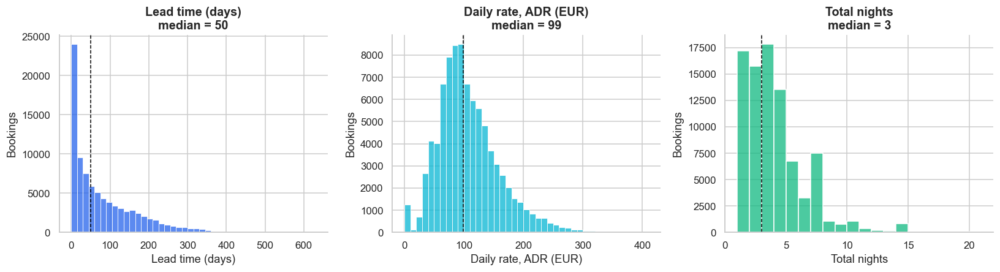
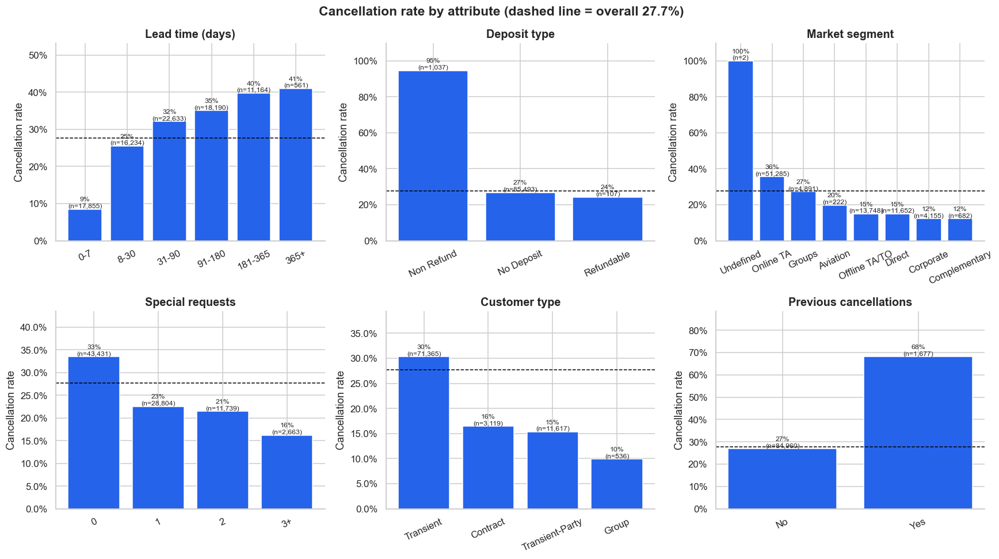
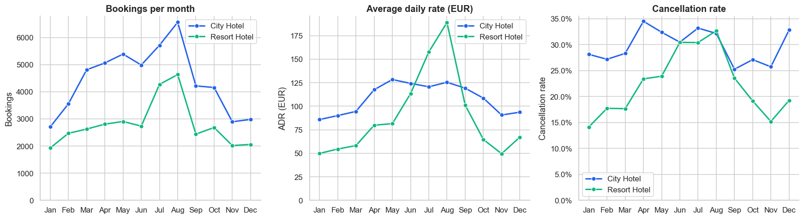
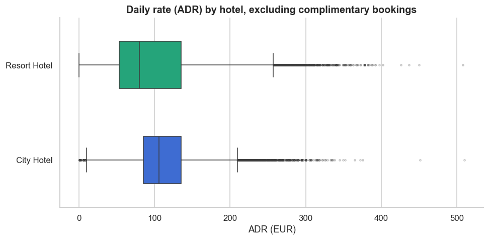
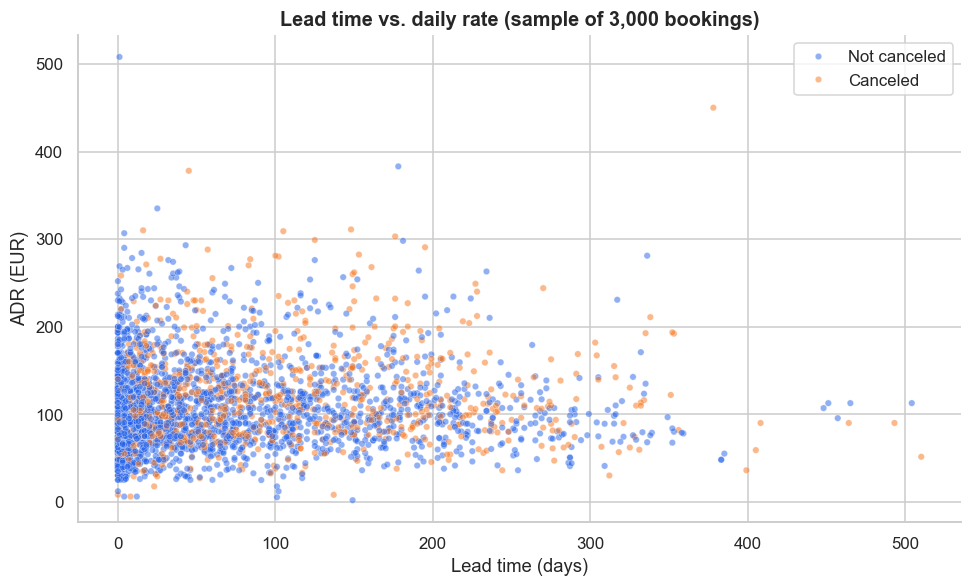
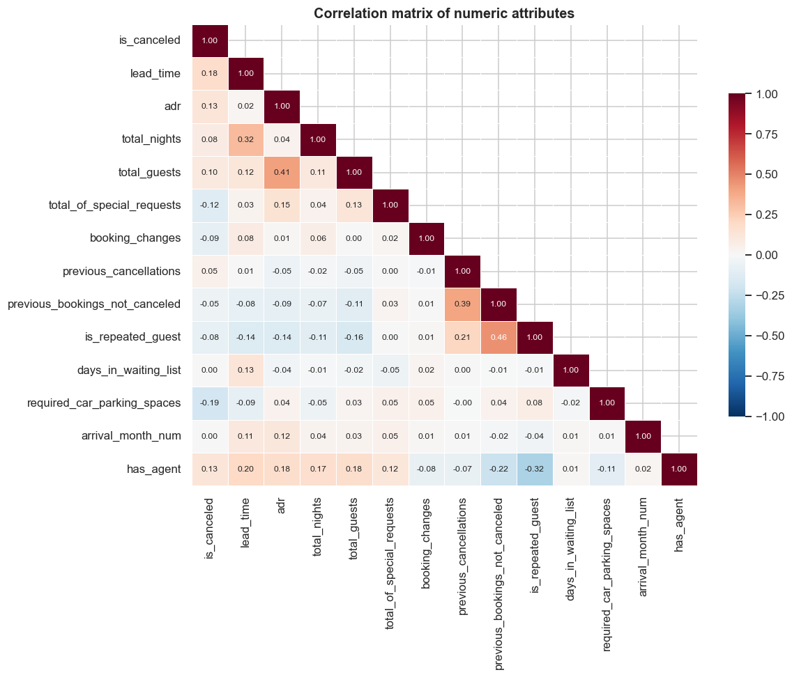
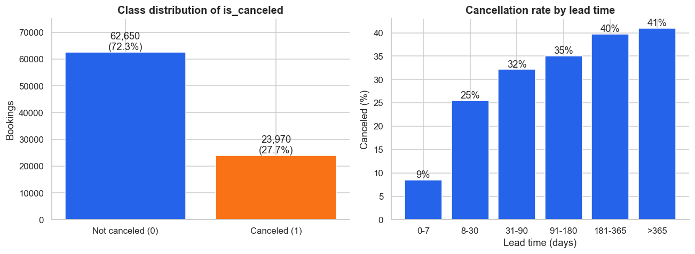

05 · Exploratory Data Analysis (EDA)
CIS 517 – Hotel Booking Cancellation Prediction Using Data Mining
Goal: explore the cleaned data visually before modelling. Each chart answers one question:
how the main attributes are distributed, which attributes are related to cancellation,
how prices change over the year, and which attributes are correlated.
All charts are saved to figures/ for the report and the website.
ــــــــــــــــــــــــــــــــــــــــــــــــــــــــــــــــــــــــــــــــــــــــــــــــــــــــــــــــــــــــــــــــــــــــــــــــــــــــــــــــــــــــــــــــــــــــــــــــــــــــــــــــــــــــــــــــــــــــــــــــــــــــــــــــــــــــــــــــــــــــــــــــــــــــــــــ
1. Setup
One consistent chart style for the whole project, using the website colors (blue, cyan, green).
from pathlib import Path import pandas as pd import numpy as np import matplotlib.pyplot as plt import seaborn as sns df = pd.read_csv("../data/processed/hotel_bookings_clean.csv", parse_dates=["arrival_date"]) print("Data:", df.shape) BLUE, CYAN, GREEN, ORANGE = "#2563eb", "#06b6d4", "#10b981", "#f97316" sns.set_theme(style="whitegrid") plt.rcParams.update({ "figure.figsize": (9, 4.5), "figure.dpi": 110, "axes.spines.top": False, "axes.spines.right": False, "axes.titleweight": "bold", "axes.titlesize": 13, }) FIG_DIR = Path("../figures") FIG_DIR.mkdir(exist_ok=True) def save(fig, name): fig.savefig(FIG_DIR / f"{name}.png", bbox_inches="tight", dpi=150)
Data: (86637, 41)
2. Distribution of the main numeric attributes
Question: what do typical bookings look like (how far in advance, at what price, for how long)? The dashed line marks the median.
fig, axes = plt.subplots(1, 3, figsize=(15, 4.2)) specs = [ ("lead_time", "Lead time (days)", range(0, 640, 15), BLUE), ("adr", "Daily rate, ADR (EUR)", range(0, 420, 10), CYAN), ("total_nights", "Total nights", range(1, 22), GREEN), ] for ax, (col, label, bins, color) in zip(axes, specs): sns.histplot(df[col], bins=list(bins), color=color, ax=ax) median = df[col].median() ax.axvline(median, color="black", linestyle="--", linewidth=1) ax.set_title(f"{label}\nmedian = {median:g}") ax.set_xlabel(label) ax.set_ylabel("Bookings") fig.tight_layout() save(fig, "eda_01_distributions") plt.show()

3. Cancellation rate by attribute
Question: which attributes are related to cancellation? Each bar is the share of canceled bookings in that group; the dashed line is the overall rate (27.7%). Large differences between groups suggest the attribute will be useful for classification.
overall = df["is_canceled"].mean() def cancel_rate_plot(ax, data, col, title, order=None): rates = data.groupby(col)["is_canceled"].agg(["mean", "size"]) rates = rates.loc[order] if order else rates.sort_values("mean", ascending=False) bars = ax.bar(rates.index.astype(str), rates["mean"], color=BLUE) ax.axhline(overall, color="black", linestyle="--", linewidth=1) for bar, (rate, n) in zip(bars, rates.values): ax.annotate(f"{rate:.0%}\n(n={int(n):,})", (bar.get_x() + bar.get_width() / 2, rate), ha="center", va="bottom", fontsize=8) ax.set_title(title) ax.set_ylabel("Cancellation rate") ax.set_ylim(0, min(1.1, rates["mean"].max() * 1.3)) ax.yaxis.set_major_formatter(plt.matplotlib.ticker.PercentFormatter(1.0)) ax.tick_params(axis="x", rotation=25) plot_df = df.assign( lead_group=pd.cut(df["lead_time"], [-1, 7, 30, 90, 180, 365, 1000], labels=["0-7", "8-30", "31-90", "91-180", "181-365", "365+"]), requests=df["total_of_special_requests"].clip(upper=3).astype(str).replace("3", "3+"), previous_cancel=np.where(df["previous_cancellations"] > 0, "Yes", "No"), ) fig, axes = plt.subplots(2, 3, figsize=(16, 9)) cancel_rate_plot(axes[0, 0], plot_df, "lead_group", "Lead time (days)", order=["0-7", "8-30", "31-90", "91-180", "181-365", "365+"]) cancel_rate_plot(axes[0, 1], plot_df, "deposit_type", "Deposit type") cancel_rate_plot(axes[0, 2], plot_df, "market_segment", "Market segment") cancel_rate_plot(axes[1, 0], plot_df, "requests", "Special requests", order=["0", "1", "2", "3+"]) cancel_rate_plot(axes[1, 1], plot_df, "customer_type", "Customer type") cancel_rate_plot(axes[1, 2], plot_df, "previous_cancel", "Previous cancellations", order=["No", "Yes"]) fig.suptitle("Cancellation rate by attribute (dashed line = overall 27.7%)", fontsize=15, fontweight="bold") fig.tight_layout() save(fig, "eda_02_cancel_rate_by_attribute") plt.show()

4. Seasonality
Question: how do the number of bookings, the price and the cancellation rate change over the year, and do the two hotels behave the same way?
monthly = (df.groupby(["arrival_month_num", "hotel"]) .agg(bookings=("is_canceled", "size"), adr=("adr", "mean"), cancel_rate=("is_canceled", "mean")) .reset_index()) month_names = ["Jan", "Feb", "Mar", "Apr", "May", "Jun", "Jul", "Aug", "Sep", "Oct", "Nov", "Dec"] hotel_colors = {"City Hotel": BLUE, "Resort Hotel": GREEN} fig, axes = plt.subplots(1, 3, figsize=(16, 4.5)) panels = [("bookings", "Bookings per month", "Bookings"), ("adr", "Average daily rate (EUR)", "ADR (EUR)"), ("cancel_rate", "Cancellation rate", "Cancellation rate")] for ax, (col, title, ylabel) in zip(axes, panels): sns.lineplot(data=monthly, x="arrival_month_num", y=col, hue="hotel", palette=hotel_colors, marker="o", linewidth=2, ax=ax) ax.set_title(title) ax.set_xlabel("") ax.set_ylabel(ylabel) ax.set_xticks(range(1, 13)) ax.set_xticklabels(month_names) ax.legend(title="") ax.set_ylim(bottom=0) axes[2].yaxis.set_major_formatter(plt.matplotlib.ticker.PercentFormatter(1.0)) fig.tight_layout() save(fig, "eda_03_seasonality") plt.show()

5. Price distribution by hotel
Question: how do prices differ between the two hotels, and are there extreme values?
fig, ax = plt.subplots(figsize=(9, 4.5)) sns.boxplot(data=df[df["adr"] > 0], x="adr", y="hotel", hue="hotel", palette=hotel_colors, legend=False, width=0.5, ax=ax, flierprops={"marker": "o", "markersize": 2, "alpha": 0.3}) ax.set_title("Daily rate (ADR) by hotel, excluding complimentary bookings") ax.set_xlabel("ADR (EUR)") ax.set_ylabel("") fig.tight_layout() save(fig, "eda_04_adr_boxplot") plt.show() df[df["adr"] > 0].groupby("hotel")["adr"].describe().round(1)

| count | mean | std | min | 25% | 50% | 75% | max | |
|---|---|---|---|---|---|---|---|---|
| hotel | ||||||||
| City Hotel | 52320.0 | 113.2 | 39.5 | 0.5 | 85.0 | 106.2 | 135.0 | 510.0 |
| Resort Hotel | 33265.0 | 101.1 | 62.8 | 0.3 | 53.4 | 80.1 | 135.0 | 508.0 |
6. Lead time vs. price
Question: can canceled and kept bookings be separated using just two attributes? A random sample of 3,000 bookings is plotted so that the points do not hide each other.
sample = df[df["adr"] > 0].sample(3000, random_state=42) fig, ax = plt.subplots(figsize=(9, 5.5)) sns.scatterplot(data=sample, x="lead_time", y="adr", hue="is_canceled", palette={0: BLUE, 1: ORANGE}, alpha=0.5, s=18, ax=ax) ax.set_title("Lead time vs. daily rate (sample of 3,000 bookings)") ax.set_xlabel("Lead time (days)") ax.set_ylabel("ADR (EUR)") handles, _ = ax.get_legend_handles_labels() ax.legend(handles, ["Not canceled", "Canceled"], title="") fig.tight_layout() save(fig, "eda_05_scatter_lead_adr") plt.show() print(f"Correlation lead_time vs adr: {sample['lead_time'].corr(sample['adr']):.2f}")

Correlation lead_time vs adr: 0.04
7. Correlation matrix
Question: which numeric attributes move together, and which are linearly related to cancellation? Pearson correlation ranges from −1 (opposite direction) to +1 (same direction); 0 means no linear relation.
corr_cols = ["is_canceled", "lead_time", "adr", "total_nights", "total_guests", "total_of_special_requests", "booking_changes", "previous_cancellations", "previous_bookings_not_canceled", "is_repeated_guest", "days_in_waiting_list", "required_car_parking_spaces", "arrival_month_num", "has_agent"] corr = df[corr_cols].corr() fig, ax = plt.subplots(figsize=(11, 9)) mask = np.triu(np.ones_like(corr, dtype=bool), k=1) sns.heatmap(corr, mask=mask, annot=True, fmt=".2f", cmap="RdBu_r", center=0, vmin=-1, vmax=1, linewidths=0.5, annot_kws={"size": 8}, cbar_kws={"shrink": 0.7}, ax=ax) ax.set_title("Correlation matrix of numeric attributes") fig.tight_layout() save(fig, "eda_06_correlation_matrix") plt.show() corr["is_canceled"].drop("is_canceled").sort_values(key=abs, ascending=False).round(2)

required_car_parking_spaces -0.19 lead_time 0.18 has_agent 0.13 adr 0.13 total_of_special_requests -0.12 total_guests 0.10 booking_changes -0.09 is_repeated_guest -0.08 total_nights 0.08 previous_bookings_not_canceled -0.05 previous_cancellations 0.05 arrival_month_num 0.00 days_in_waiting_list 0.00 Name: is_canceled, dtype: float64
Figure for the report: class distribution and cancellation rate by lead time
This figure uses the final dataset after the outlier analysis (notebook 03). It shows that the classes are imbalanced (72.3% / 27.7%) and that the cancellation rate increases with lead time.
# Figure for the report: class distribution and cancellation rate by lead time df_final = pd.read_csv("../data/processed/hotel_bookings_final.csv") fig, axes = plt.subplots(1, 2, figsize=(12, 4.5)) counts = df_final["is_canceled"].value_counts().sort_index() axes[0].bar(["Not canceled (0)", "Canceled (1)"], counts.values, color=[BLUE, ORANGE]) for i, v in enumerate(counts.values): axes[0].text(i, v, f"{v:,}\n({v / len(df_final):.1%})", ha="center", va="bottom") axes[0].set_ylim(0, counts.max() * 1.2) axes[0].set_title("Class distribution of is_canceled") axes[0].set_ylabel("Bookings") groups = pd.cut(df_final["lead_time"], [-1, 7, 30, 90, 180, 365, 1000], labels=["0-7", "8-30", "31-90", "91-180", "181-365", ">365"]) rate = df_final.groupby(groups, observed=True)["is_canceled"].mean() axes[1].bar(rate.index.astype(str), rate.values * 100, color=BLUE) for i, v in enumerate(rate.values): axes[1].text(i, v * 100, f"{v:.0%}", ha="center", va="bottom") axes[1].set_title("Cancellation rate by lead time") axes[1].set_xlabel("Lead time (days)") axes[1].set_ylabel("Canceled (%)") plt.tight_layout() plt.savefig(FIG_DIR / "stat_01_class_leadtime.png", dpi=150, bbox_inches="tight") plt.show()

ــــــــــــــــــــــــــــــــــــــــــــــــــــــــــــــــــــــــــــــــــــــــــــــــــــــــــــــــــــــــــــــــــــــــــــــــــــــــــــــــــــــــــــــــــــــــــــــــــــــــــــــــــــــــــــــــــــــــــــــــــــــــــــــــــــــــــــــــــــــــــــــــــــــــــــــ
Summary of findings
Typical booking (median): booked 50 days ahead, €99 per night, 3 nights. Lead time is strongly right-skewed (mean 80 > median 50); 1,052 bookings are complimentary (ADR = 0).
Attributes related to cancellation (overall rate 27.7%):
| Attribute | Lowest group | Highest group |
|---|---|---|
| Lead time | 0–7 days: 9% | over 365 days: 41% (rises steadily) |
| Market segment | Corporate: 12% | Online TA: 36% |
| Special requests | 3 or more: 16% | none: 33% |
| Previous cancellations | none: 27% | at least one: 68% (1,677 bookings) |
| Customer type | Group: 10% | Transient: 30% |
| Deposit type | No Deposit: 27% | Non Refund: 95% (only 1,037 bookings; correlation, not causation) |
Seasonality: prices at the Resort Hotel rise almost 4× from January (€50) to August (€189), and its cancellation rate rises with them (14% → 33%). The City Hotel is more stable (€86–128, cancellation 25–35%). The effect of the month depends on the hotel (an interaction).
Prices: City Hotel median €106 with a narrow spread (IQR €49); Resort Hotel median €80 with a wide spread (IQR €83). Both have many high values beyond the IQR whiskers, to be analysed in Outlier Detection.
Relationships: canceled and kept bookings overlap heavily on lead time vs. price, so cancellation cannot be predicted
from two attributes. Linear correlations with cancellation are all weak (|r| ≤ 0.19), and the strongest one
(required_car_parking_spaces) is data leakage. No pair of attributes is highly correlated (all |r| < 0.5).
Implications for modelling
| Finding | Consequence |
|---|---|
| Clear differences in cancellation rate across lead time, segment, requests, customer type | Good candidate attributes for classification |
| Classes overlap; correlations weak | Expect moderate accuracy; compare against the 72% baseline, not 100% |
| Month effect differs by hotel | Decision Tree Regression should capture it better than Linear Regression |
| Lead time and nights are skewed | Use a log transform before distance-based methods (KNN, K-Means) |
| Many high prices beyond the IQR whiskers | Analyse with IQR, Z-Score and Isolation Forest in Outlier Detection |
| Parking and assigned room reveal the outcome | Exclude from classification (leakage) |
| No highly correlated pairs | No attributes need to be dropped for multicollinearity |
Figures saved in figures/: eda_01 – eda_06.
Next step: 05_classification.ipynb.